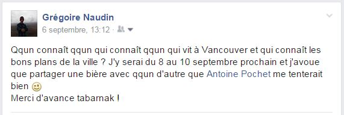
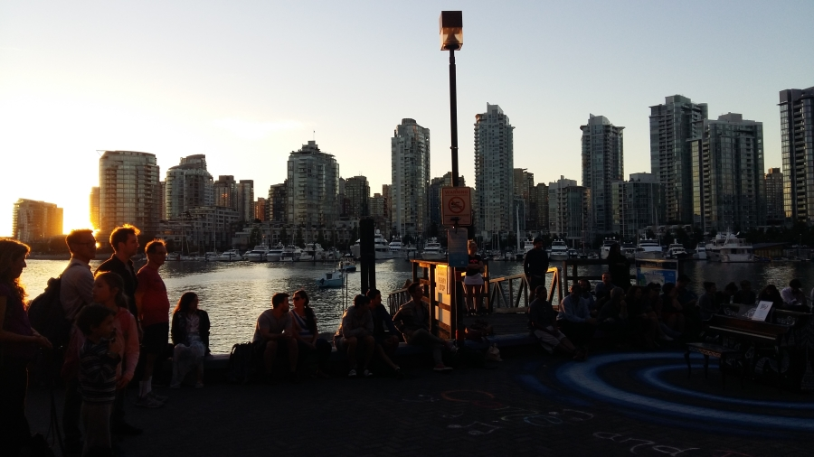
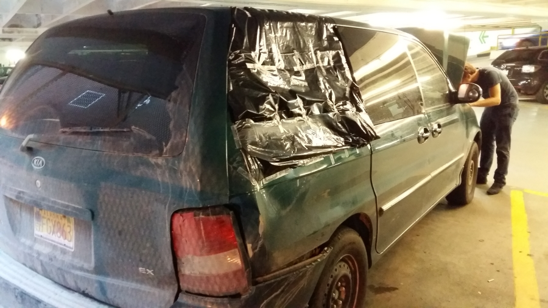
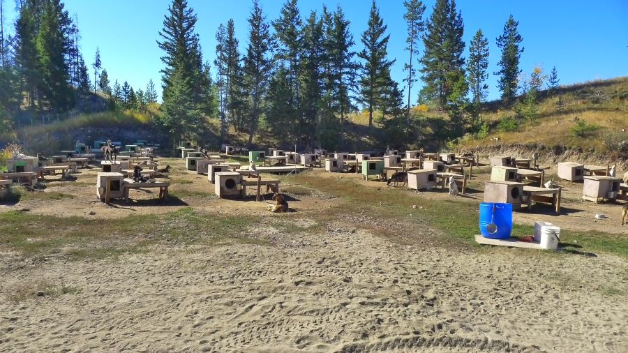
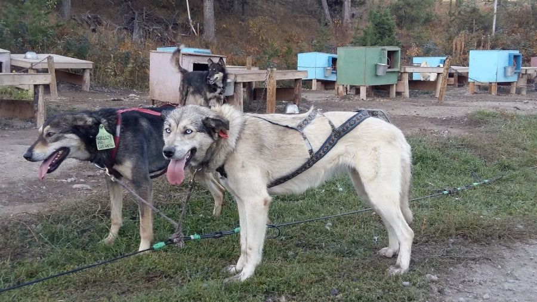
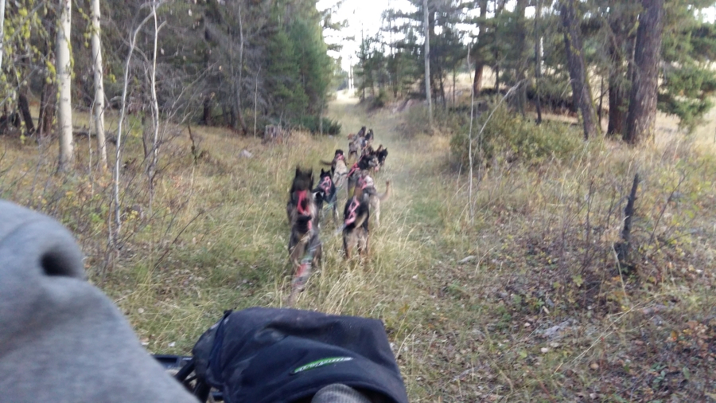
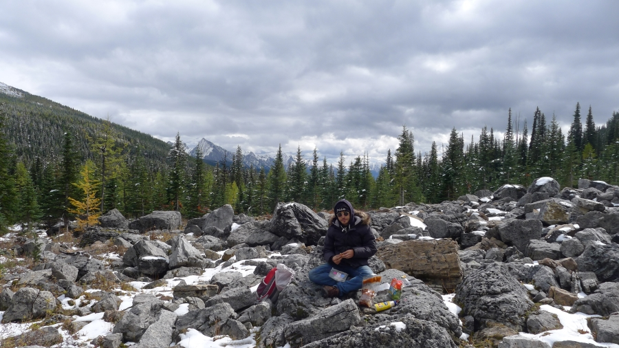
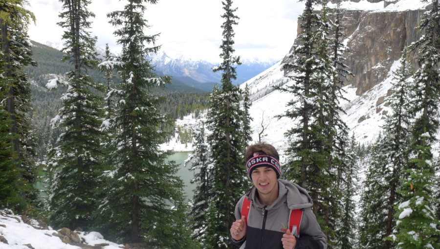
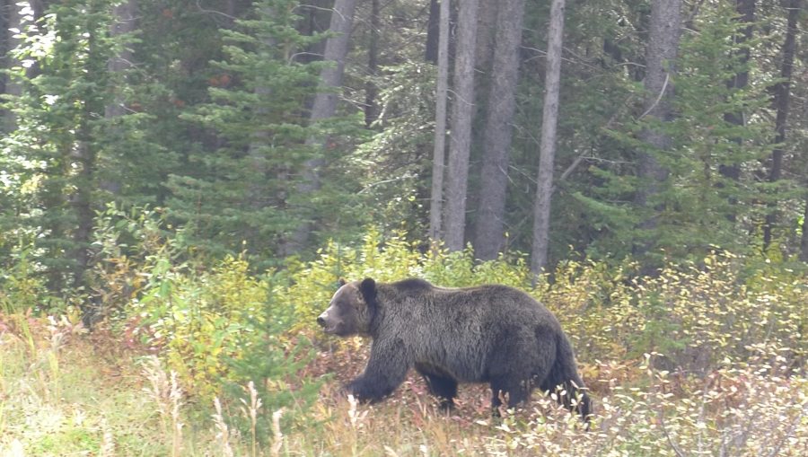
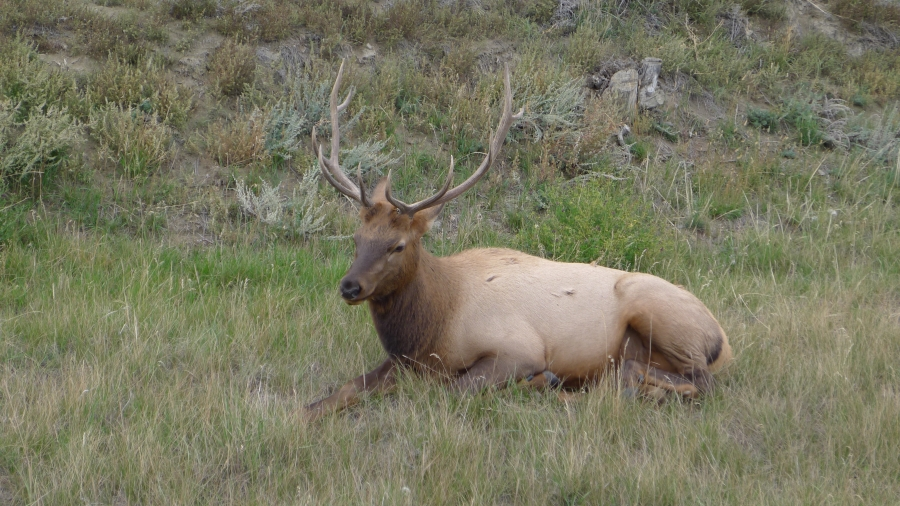

From Vancouver to the Rocky
Un premier chapitre bien rempli
Ça y est ! On est enfin arrivés dans le Montana aux Etats-Unis, après plus de trois semaines de vadrouille sur les routes du Grand Nord Américain ! Notre passage de la frontière américaine clôt symboliquement le premier des sept chapitres de notre aventure et on a déjà du mal à réaliser tout ce qu'on a vécu en seulement trois semaines, tous les paysages qu'on a découverts, toutes les personnes qu'on a rencontrées... Mais reprenons à Vancouver, là où on vous avait laissé il y a dix jours !
L'appel à l'aide que nous avions lancé sur les réseaux sociaux a porté ses fruits et grâce aux contacts de nos amies Cordélia, Claire & Audrey on a pu faire de super rencontres et découvrir Vancouver sous tous ses aspects !

On a eu le droit à un aperçu de la vie étudiante à la Simon Fraser University grâce à Sandy, Amélie, Clémence et Déborah, à un coucher de soleil sur les quais grâce à Veronika et à Vancouver by night grâce à Max & Sam avec ses bons côtés (les parcs en hauteur qui domine la ville, les bars) et ses moins bons côtés (Hastings Street, une rue envahie par les drogués à deux-pas du centre ville, à faire froid dans le dos...)

Les quais de Vancouver au soleil couchant
GTA V(ancouver)
Enfin bon pour être tout à fait honnête Vancouver restera surtout marquée dans l'histoire de notre voyage par un incident. Alors que nous avions garé la voiture sur un parking du centre-ville, nous l'avons retrouvée le lendemain avec la vitre arrière fracturée et mon gros sac à dos que j'avais laissé dedans manquant... (Antoine plus prudent avait pris toutes ses affaires avec lui à l'auberge). Enfin bon il faut croire que le/la cambrioleur n'était pas très intéressé(e) par mes chaussettes sales, nous avons retrouvé le sac à dos et quasi l'intégralité de mes affaires répandues sur le sol 10 mètres plus loin. Seuls manquent à l'appel mes minis-enceintes et mon mp3 qui dataient de ma 3e ainsi qu'une paire de gants. Malheureusement pour le/la cambrioleur il ne risque pas de faire fortune avec ça ! Enfin bon nous avons pu réparer la vitre et reprendre la route direction les parcs nationaux de Jasper et de Banff avec finalement plus de peur que de mal.

La vitre arrière méchamment cassée
Une histoire de chien
Sur la route qui sépare Vancouver de Jasper nous avions une étape de prévue et une incroyable surprise nous est tombée dessus. Une nouvelle fois grâce aux réseaux sociaux (je ne mentionne pas Facebook pour ne pas leur faire de la pub) j'ai appris que JB, un ami du BAFA, était en ce moment à Kamloops, au coeur de la Colombie Britannique, en train de travailler pour quelques semaines dans un chenil de chiens de traîneaux !! A 20 km au Nord de là où on avait prévu de faire notre étape ! JB parle de nous à Megan, la propriétaire du chenil, qui accepte gentiment de nous recevoir pour la nuit et le lendemain matin on a l'occasion de voir ce qu'il en coûte de s'occuper de 100 chiens à la fois. Il faut beaucoup d'énergie et la cacophonie est totale lorsque tôt le matin Megan en emmène quelques uns courir pour s'entraîner en prévision de l'hiver où les chiens servent d'attraction touristique dans le parc de Banff. Tous ces chiens, des huskeys alaskiens by the way, ne vivent que pour une chose : COURIR! C'est vraiment incroyable de voir à quel point ils sont heureux lorsqu'on leur laisse l'opportunité de nous tracter pour une balade en quad.

100 chiens qui n'attendent qu'une chose : courir!

Deux huskeys alaskiens

En été les chiens tirent un quad pour s'entraîner
Jasper & Banff : camping et randos
Après cet intermède quasi irréel au milieu de tous ces chiens nous nous remettons en route et nous atteignons rapidement les parcs de Jasper et de Banff dans l'état d'Alberta. Nous y restons 4 jours le temps de profiter des incroyables paysages, des couleurs d'automne que prennent les arbres, de la profondeur des lacs, de la neige dès que nous grimpons un peu en altitude et des animaux que nous croisons de temps à autre sur notre route. On se maintient en forme également à coup de randos dans les Rocheuses (the Rockies comme on dit ici). A titre personnel je suis assez fier de mes chaussures Quechua(TM) qui après avoir gravies les Alpes et l'Himalaya ajoutent une troisième chaîne de montagne mythique à leur palmarès en attendant la Cordillère des Andes dans une prochaine partie du voyage ;)
Des images plein la tête nous finissons tout de même par quitter ces lieux et reprenons notre route en direction du Sud. Le passage de la frontière est pénible, l'officier nous lance tout de même un "Your situation doesn't look good guys" car il ne comprend pas très bien qu'on ait acheté une voiture plutôt que d'en louer une mais il finit par nous laisser passer et nous voici de nouveau aux States :)

Pause déjeuner dans les Rockies

La neige nous accompagne dès que l'on s'élève un peu

Un grizzly aperçu sur le bord de la route
Bilan de ce premier chapitre ?
Fatigués mais extrêmement heureux et fiers de ce qu'on a déjà réalisés ! Notre voiture tient le coup même si elle a gagné de nouveaux accrocs sur la portière, perdu deux poignées de porte passager (on doit ouvrir les portières de l'intérieur), et que la jauge d'essence se met parfois à nous annoncer que le réservoir est à sec alors que l'on vient de faire le plein. Le plus dur a été fait et on est serein sur sa capacité à nous emmener encore quelques kilomètres sur les routes américaines :)
L'essence relativement peu chère (environ 0,70€), les nuits au camping, les repas au feu de bois et le support de nos proches sur notre cagnotte Leetchi nous permettent de bien tenir notre budget et d'envisager la suite avec optimisme :)
Le 20 septembre nous devrions atteindre la ferme dans laquelle nous allons passer un mois en tant qu'éleveur de bisons... On a hâte d'y être et de vous raconter comment c'est !
Et nos recherches sur l'eau?? Promis ça arrive très bientôt, il ne nous reste plus qu'à compiler les dernières images et peaufiner l'article avant de vous livrer nos conclusions sur cette première partie !
Et comme d'habitude on vous laisse sur un petit jeu. Cette fois il s'agit de deviner quel est l'animal sur la photo ci-dessous ! Caribou, élan, orignal, cerf, daim, renne, wapiti..? A vous de jouer ! ;) Envoyez votre réponse ainsi que votre justification à contact@aquamerica.fr et nous publierons le nom du gagnant sur notre page Facebook dans les prochains jours :)

Mais de quel animal s'agit-il ??
A très vite !